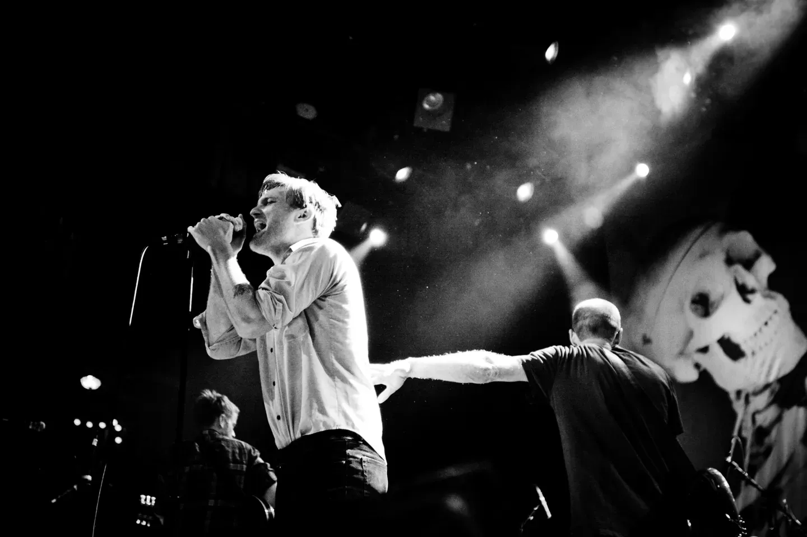

<?xml version="1.0" encoding="UTF-8"?><rss xmlns:dc="http://purl.org/dc/elements/1.1/" xmlns:content="http://purl.org/rss/1.0/modules/content/" xmlns:atom="http://www.w3.org/2005/Atom" version="2.0" xmlns:media="http://search.yahoo.com/mrss/"><channel><title><![CDATA[Mekuria // Getinet]]></title><description><![CDATA[I am a UX/UI & Visual designer with experience leading design and front-end development teams. I have expertise in designing and developing the user experience for web-based applications, complex webs]]></description><link>../</link><image><url>../favicon.png</url><title>Mekuria // Getinet</title><link>../</link></image><generator>Ghost 5.113</generator><lastBuildDate>Sat, 05 Apr 2025 05:23:13 GMT</lastBuildDate><atom:link href="../rss/" rel="self" type="application/rss+xml"/><ttl>60</ttl><item><title><![CDATA[Not here … or there]]></title><description><![CDATA[<figure class="kg-card kg-image-card kg-width-full"></figure>]]></description><link>../not-here-or-there-2/</link><guid isPermaLink="false">67f0bcbca2006b11ffd65559</guid><category><![CDATA[Photography]]></category><dc:creator><![CDATA[Mekuria Getinet]]></dc:creator><pubDate>Sat, 05 Apr 2025 05:17:16 GMT</pubDate><media:content url="../content/images/2025/04/20081004-150536.webp" medium="image"/><content:encoded><![CDATA[<figure class="kg-card kg-image-card kg-width-full"></figure>]]></content:encoded></item><item><title><![CDATA[Calm Grounding]]></title><description><![CDATA[<figure class="kg-card kg-image-card kg-width-full"></figure>]]></description><link>../calm-grounding/</link><guid isPermaLink="false">67f0ba98a2006b11ffd65542</guid><category><![CDATA[Photography]]></category><dc:creator><![CDATA[Mekuria Getinet]]></dc:creator><pubDate>Sat, 05 Apr 2025 05:10:12 GMT</pubDate><media:content url="../content/images/2025/04/20081004-131129.webp" medium="image"/><content:encoded><![CDATA[<figure class="kg-card kg-image-card kg-width-full"></figure>]]></content:encoded></item><item><title><![CDATA[Cold War Kids]]></title><description><![CDATA[<figure class="kg-card kg-gallery-card kg-width-wide"><div class="kg-gallery-container"><div class="kg-gallery-row"><div class="kg-gallery-image"></div><div class="kg-gallery-image"></div><div class="kg-gallery-image"></div></div><div class="kg-gallery-row"><div class="kg-gallery-image"></div><div class="kg-gallery-image"></div></div><div class="kg-gallery-row"><div class="kg-gallery-image"></div><div class="kg-gallery-image"></div></div></div></figure><figure class="kg-card kg-image-card kg-width-full"></figure>]]></description><link>../cold-war-kids/</link><guid isPermaLink="false">67f0b737a2006b11ffd6552b</guid><category><![CDATA[Photography]]></category><dc:creator><![CDATA[Mekuria Getinet]]></dc:creator><pubDate>Sat, 05 Apr 2025 05:00:19 GMT</pubDate><media:content url="../content/images/2025/04/mekuria_getinet_coldwarkids-01.webp" medium="image"/><content:encoded><![CDATA[<figure class="kg-card kg-gallery-card kg-width-wide"><div class="kg-gallery-container"><div class="kg-gallery-row"><div class="kg-gallery-image"></div><div class="kg-gallery-image"></div><div class="kg-gallery-image"></div></div><div class="kg-gallery-row"><div class="kg-gallery-image"></div><div class="kg-gallery-image"></div></div><div class="kg-gallery-row"><div class="kg-gallery-image"></div><div class="kg-gallery-image"></div></div></div></figure><figure class="kg-card kg-image-card kg-width-full"></figure>]]></content:encoded></item><item><title><![CDATA[Designers and Developers: The Perfect Dance]]></title><description><![CDATA[<p>As a product designer working alongside developers at a software consultancy, I&apos;ve come to appreciate that our relationship is much like a dance partnership. When both sides move in harmony, the result is something truly beautiful&#x2014;functional, intuitive digital experiences that delight users. Here&apos;s my</p>]]></description><link>../designers-and-developers-the-perfect-dance/</link><guid isPermaLink="false">67f02d8c673bf851da50e0c8</guid><category><![CDATA[Blog]]></category><dc:creator><![CDATA[Mekuria Getinet]]></dc:creator><pubDate>Fri, 04 Apr 2025 19:10:15 GMT</pubDate><media:content url="https://images.unsplash.com/photo-1497281559858-4ae63e694d04?crop=entropy&amp;cs=tinysrgb&amp;fit=max&amp;fm=jpg&amp;ixid=M3wxMTc3M3wwfDF8c2VhcmNofDN8fGh1ZyUyMGhvcml6b250YWx8ZW58MHx8fHwxNzQzNzkzNzY1fDA&amp;ixlib=rb-4.0.3&amp;q=80&amp;w=2000" medium="image"/><content:encoded><![CDATA[<p>As a product designer working alongside developers at a software consultancy, I&apos;ve come to appreciate that our relationship is much like a dance partnership. When both sides move in harmony, the result is something truly beautiful&#x2014;functional, intuitive digital experiences that delight users. Here&apos;s my perspective on how designers and developers can create magic together.</p><h2 id="the-choreography-of-collaboration">The Choreography of Collaboration</h2><p>A harmonious relationship between developers and UX/UI designers resembles the perfect dance duet&#x2014;when both partners are in sync, the performance is both beautiful and seamless. After years of experience in this dance, I&apos;ve discovered the key movements that ensure we never step on each other&apos;s toes.</p><p>Think of communication as the underlying beat that guides our movements. Without it, the dance falls apart. Regular check-ins ensure everyone stays on rhythm. In my practice, I&apos;ve found tools like Figma for design handoff and Storybook for component libraries create a shared language between design and development teams. These collaborative platforms allow us to demonstrate our ideas rather than just describe them&#x2014;because interpretive dance might be fun, but it&apos;s not the clearest way to build a product.</p><p>Just as you wouldn&apos;t tell a prima ballerina how to execute a perfect fouett&#xE9;, respecting domain expertise keeps our collaboration flowing smoothly. In my most successful projects, developers appreciate the intentionality behind every design decision, while I ensure my designs account for technical constraints. When a developer explains why an animation might impact performance, I listen. When I explain why a particular interaction pattern is crucial for user understanding, they adapt. This mutual respect creates designs that are both beautiful and buildable.</p><p>The most innovative solutions emerge when designers and developers brainstorm together&#x2014;combining the creative flourish of UX with the logical structure of code. I&apos;ve initiated cross-functional workshops where we tackle challenging features as a unified team. One mind focuses on user flows and emotional responses while another considers data structures and state management. This collaboration consistently produces solutions neither party would have discovered alone.</p><h2 id="perfecting-the-performance">Perfecting the Performance</h2><p>When both teams work toward the same grand finale, our users are the ones who leap to their feet in appreciation. I make it a practice to ensure everyone understands not just what we&apos;re building, but why. When designers and developers share a vision of how our product will improve users&apos; lives, decisions become clearer and compromises more thoughtful. The cohesive experience that results feels intentional from first click to final conversion.</p><p>No audience enjoys watching dancers collide on stage. A well-coordinated routine means fewer missteps and more standing ovations. In our process, I deliver comprehensive design systems with component specifications, interaction details, and edge cases addressed. Developers, in turn, implement these designs with precision and raise potential issues early. This synchronized workflow prevents last-minute scrambles and ensures quality throughout.</p><p>Like dance rehearsals, the more we practice together, the more polished our final performance becomes. I advocate for regular review sessions where designers and developers evaluate work-in-progress together. These check-ins catch issues early when they&apos;re easier to address. Sometimes a design looks perfect in Figma but reveals unforeseen challenges in implementation&#x2014;these moments of learning strengthen our future collaborations.</p><h2 id="creating-digital-magic-together">Creating Digital Magic Together</h2><p>When both partners feel ownership of the show, you get a duet that captivates from opening number to final bow. In our team, we celebrate launches together and approach problems as shared challenges. This collective ownership means designers don&apos;t throw designs &quot;over the wall&quot; and developers don&apos;t blame &quot;unrealistic designs&quot; for implementation challenges. We succeed together, and we learn from setbacks together.</p><p>A willingness to experiment allows us to discover those breakthrough moments that could delight users in unexpected ways. Some of our most celebrated features began as &quot;what if&quot; conversations between design and development. As a designer, I propose creative approaches, and our developers find ingenious ways to bring them to life&#x2014;because sometimes you need that surprise backflip to truly captivate your audience.</p><p>A harmonious relationship between developers and UX/UI designers ultimately comes down to teamwork, respect, and shared passion for creating exceptional digital experiences. When we work together effectively, it&apos;s like watching a perfectly executed dance routine&#x2014;beautiful, coordinated, and with just the right amount of creative expression.</p><p>In my experience, this partnership doesn&apos;t just produce better products&#x2014;it makes the entire creation process more enjoyable. And in the end, isn&apos;t that what a great performance is all about?</p>]]></content:encoded></item><item><title><![CDATA[Engage 2025]]></title><description><![CDATA[<p>I had the surreal experience of speaking at my first-ever tech conference&#x2014;<strong>Claris Engage 2025</strong>. As a designer stepping into a room full of FileMaker developers, I&#x2019;ll be honest: I was <em>nervous</em>. Like, &#x201C;double-check your slides for the tenth time, maybe fake a tech issue and</p>]]></description><link>../engage-2025/</link><guid isPermaLink="false">67f0284a673bf851da50e0a4</guid><category><![CDATA[Blog]]></category><dc:creator><![CDATA[Mekuria Getinet]]></dc:creator><pubDate>Fri, 04 Apr 2025 18:45:43 GMT</pubDate><media:content url="https://images.unsplash.com/photo-1475721027785-f74eccf877e2?crop=entropy&amp;cs=tinysrgb&amp;fit=max&amp;fm=jpg&amp;ixid=M3wxMTc3M3wwfDF8c2VhcmNofDh8fGRhdGFiYXNlJTIwdWklMjBjb25mZXJlbmNlJTIwfGVufDB8fHx8MTc0Mzc5MjI5OHww&amp;ixlib=rb-4.0.3&amp;q=80&amp;w=2000" medium="image"/><content:encoded><![CDATA[<p>I had the surreal experience of speaking at my first-ever tech conference&#x2014;<strong>Claris Engage 2025</strong>. As a designer stepping into a room full of FileMaker developers, I&#x2019;ll be honest: I was <em>nervous</em>. Like, &#x201C;double-check your slides for the tenth time, maybe fake a tech issue and sneak out the back&#x201D; nervous.</p><p>But I stayed. And I&#x2019;m glad I did.</p><h3 id="the-build-up"><strong>The Build-Up</strong></h3><p>As the conference approached, a whirlwind of emotions consumed me. The thought of addressing an audience well-versed in development, while I came from a design background, was daunting. I questioned whether my insights would resonate and if I could bridge the gap between design and development effectively.&#x200B;</p><h3 id="session-highlights"><strong>Session Highlights</strong></h3><p>My session, titled &quot;Button Bars are Everything,&quot; delved into the pivotal role of button bars in enhancing user interfaces within FileMaker solutions. Drawing from my experiences, I shared insights on how this versatile element can streamline design processes and improve user interactions.&#x200B;</p><figure class="kg-card kg-image-card kg-card-hascaption"><figcaption><span style="white-space: pre-wrap;">The Hive: Allison, Russ, Jay, Red, Vincent, Julian, Me and, The Kim</span></figcaption></figure><p></p><p>Key points discussed included:</p><ul><li><strong>Versatility of Button Bars</strong>: Beyond traditional navigation, button bars can serve as dynamic elements that adapt based on user roles and data states.&#x200B;</li><li><strong>Design Systems Integration</strong>: Incorporating button bars into a cohesive design system ensures consistency, reduces complexity, and enhances maintainability.&#x200B;</li><li><strong>Conditional Visibility</strong>: Utilizing calculated labels and conditional show/hide features allows for personalized user experiences, displaying relevant options based on specific contexts.&#x200B;</li></ul><p>These strategies aim to reduce friction, promote consistency, and establish predictable patterns&#x2014;core principles in effective UI/UX design.&#x200B;</p><h3 id="overcoming-the-nerves"><strong>Overcoming the Nerves</strong></h3><p>Standing before a room filled with developers, I took a deep breath and reminded myself of the value that design brings to development. As I progressed through my presentation, the initial jitters faded, replaced by an engaging dialogue with attendees. Their questions and feedback underscored a shared interest in integrating design principles into development workflows.&#x200B;</p><h3 id="reflections"><strong>Reflections</strong></h3><p>Reflecting on the experience, I&apos;m grateful for the opportunity to contribute a designer&apos;s perspective to a developer-centric conference. The positive reception affirmed that bridging the gap between design and development is not only possible but essential. This experience has emboldened me to continue advocating for design&apos;s role in creating intuitive and effective solutions.&#x200B;</p><h3 id="conclusion"><strong>Conclusion</strong></h3><p>Engage 2025 was more than just a conference; it was a platform for growth, collaboration, and breaking personal barriers. To fellow designers contemplating stepping into unfamiliar territories: embrace the challenge. Our perspectives are invaluable, and sharing them can lead to meaningful advancements in any field.&#x200B;</p>]]></content:encoded></item><item><title><![CDATA[Realogy FWD 2017]]></title><description><![CDATA[<figure class="kg-card kg-gallery-card kg-width-wide kg-card-hascaption"><div class="kg-gallery-container"><div class="kg-gallery-row"><div class="kg-gallery-image"></div><div class="kg-gallery-image"></div></div></div><figcaption><p dir="ltr"><span style="white-space: pre-wrap;">Front &amp; Back of the Program</span></p></figcaption></figure>]]></description><link>../realogy-fwd-2017/</link><guid isPermaLink="false">67dcd9b678cf98c87a5ced50</guid><category><![CDATA[Graphic Design]]></category><dc:creator><![CDATA[Mekuria Getinet]]></dc:creator><pubDate>Fri, 21 Mar 2025 03:23:09 GMT</pubDate><media:content url="../content/images/2025/03/fwd-2017-hero.webp" medium="image"/><content:encoded><![CDATA[<figure class="kg-card kg-gallery-card kg-width-wide kg-card-hascaption"><div class="kg-gallery-container"><div class="kg-gallery-row"><div class="kg-gallery-image"></div><div class="kg-gallery-image"></div></div></div><figcaption><p dir="ltr"><span style="white-space: pre-wrap;">Front &amp; Back of the Program</span></p></figcaption></figure>]]></content:encoded></item><item><title><![CDATA[Doll Eyes]]></title><description><![CDATA[<figure class="kg-card kg-image-card"></figure><p>This piece is an exploration of organic chaos within a digital medium. I leaned into fluid forms, scattered points of color, and an intentional lack of structure to evoke something between a dream and a glitch. There&#x2019;s a loose suggestion of a face&#x2014;eyes peering through the</p>]]></description><link>../doll-eyes/</link><guid isPermaLink="false">67db891578cf98c87a5ced2f</guid><category><![CDATA[Graphic Design]]></category><dc:creator><![CDATA[Mekuria Getinet]]></dc:creator><pubDate>Thu, 20 Mar 2025 03:19:26 GMT</pubDate><media:content url="../content/images/2025/03/DollEyes-1.webp" medium="image"/><content:encoded><![CDATA[<figure class="kg-card kg-image-card"></figure><p>This piece is an exploration of organic chaos within a digital medium. I leaned into fluid forms, scattered points of color, and an intentional lack of structure to evoke something between a dream and a glitch. There&#x2019;s a loose suggestion of a face&#x2014;eyes peering through the abstraction&#x2014;but the rest is left to interpretation.</p><p>The approach here is rooted in controlled randomness. I worked with digital tools that introduce unpredictability&#x2014;letting color diffusion, layering, and algorithmic effects shape the composition. The balance between soft washes and crisp dots creates a tension between fluidity and fragmentation. The result is something that feels ephemeral, almost like a memory dissolving as you try to grasp it.</p><p>I love how this piece walks the line between organic and digital, deliberate and accidental. It captures a moment in motion, frozen just before it fully disappears.</p>]]></content:encoded></item><item><title><![CDATA[Biggie Biggie Biggie]]></title><description><![CDATA[<figure class="kg-card kg-image-card"></figure>]]></description><link>../biggie-biggie-biggie/</link><guid isPermaLink="false">67da30d5e4df980b5862b317</guid><category><![CDATA[Graphic Design]]></category><category><![CDATA[Illustrations]]></category><dc:creator><![CDATA[Mekuria Getinet]]></dc:creator><pubDate>Wed, 19 Mar 2025 02:50:41 GMT</pubDate><media:content url="../content/images/2025/03/biggie-dots.webp" medium="image"/><content:encoded><![CDATA[<figure class="kg-card kg-image-card"></figure>]]></content:encoded></item><item><title><![CDATA[DJ Shadow at The Fillmore]]></title><description><![CDATA[<figure class="kg-card kg-image-card kg-width-full"></figure>]]></description><link>../dj-shadow-at-the-fillmore/</link><guid isPermaLink="false">67da2ff2e4df980b5862b308</guid><category><![CDATA[Graphic Design]]></category><dc:creator><![CDATA[Mekuria Getinet]]></dc:creator><pubDate>Wed, 19 Mar 2025 02:47:00 GMT</pubDate><media:content url="../content/images/2025/03/dj-shadow.webp" medium="image"/><content:encoded><![CDATA[<figure class="kg-card kg-image-card kg-width-full"></figure>]]></content:encoded></item><item><title><![CDATA[Method Man]]></title><description><![CDATA[<figure class="kg-card kg-image-card"></figure>]]></description><link>../method-man/</link><guid isPermaLink="false">67d8e8bfd39f1c4e393b31e2</guid><category><![CDATA[Photography]]></category><dc:creator><![CDATA[Mekuria Getinet]]></dc:creator><pubDate>Tue, 18 Mar 2025 03:30:32 GMT</pubDate><media:content url="../content/images/2025/03/01-Method-Man.webp" medium="image"/><content:encoded><![CDATA[<figure class="kg-card kg-image-card"></figure>]]></content:encoded></item><item><title><![CDATA[The Slew]]></title><description><![CDATA[<figure class="kg-card kg-image-card kg-width-full"></figure><figure class="kg-card kg-gallery-card kg-width-wide"><div class="kg-gallery-container"><div class="kg-gallery-row"><div class="kg-gallery-image"></div><div class="kg-gallery-image"></div><div class="kg-gallery-image"></div></div><div class="kg-gallery-row"><div class="kg-gallery-image"></div><div class="kg-gallery-image"></div><div class="kg-gallery-image"></div></div><div class="kg-gallery-row"><div class="kg-gallery-image"></div><div class="kg-gallery-image"></div></div></div></figure><figure class="kg-card kg-gallery-card kg-width-wide"><div class="kg-gallery-container"><div class="kg-gallery-row"><div class="kg-gallery-image"></div><div class="kg-gallery-image"></div><div class="kg-gallery-image"></div></div></div></figure>]]></description><link>../the-slew-2/</link><guid isPermaLink="false">67d5c943c3e0214507fcbdba</guid><category><![CDATA[Photography]]></category><dc:creator><![CDATA[Mekuria Getinet]]></dc:creator><pubDate>Sat, 15 Mar 2025 18:39:56 GMT</pubDate><media:content url="../content/images/2025/03/20090925-221747-41b012cdbe836c4d.webp" medium="image"/><content:encoded><![CDATA[<figure class="kg-card kg-image-card kg-width-full"></figure><figure class="kg-card kg-gallery-card kg-width-wide"><div class="kg-gallery-container"><div class="kg-gallery-row"><div class="kg-gallery-image"></div><div class="kg-gallery-image"></div><div class="kg-gallery-image"></div></div><div class="kg-gallery-row"><div class="kg-gallery-image"></div><div class="kg-gallery-image"></div><div class="kg-gallery-image"></div></div><div class="kg-gallery-row"><div class="kg-gallery-image"></div><div class="kg-gallery-image"></div></div></div></figure><figure class="kg-card kg-gallery-card kg-width-wide"><div class="kg-gallery-container"><div class="kg-gallery-row"><div class="kg-gallery-image"></div><div class="kg-gallery-image"></div><div class="kg-gallery-image"></div></div></div></figure>]]></content:encoded></item><item><title><![CDATA[Santigold]]></title><description><![CDATA[<h3 id="capturing-the-energy-of-santigold-at-the-fillmore">Capturing the Energy of Santigold at The Fillmore</h3><figure class="kg-card kg-gallery-card kg-width-wide"><div class="kg-gallery-container"><div class="kg-gallery-row"><div class="kg-gallery-image"></div><div class="kg-gallery-image"></div></div></div></figure><p>The Fillmore has a storied history of hosting unforgettable performances, and Santigold&#x2019;s headlining show was no exception. The night was electric, a fusion of pulsing beats, vibrant visuals, and an audience that fed off the high-energy performance. As a photographer,</p>]]></description><link>../santigold/</link><guid isPermaLink="false">67d3b788c3e0214507fcbd42</guid><category><![CDATA[Photography]]></category><dc:creator><![CDATA[Mekuria Getinet]]></dc:creator><pubDate>Fri, 14 Mar 2025 05:07:40 GMT</pubDate><media:content url="../content/images/2025/03/20081007-200852-b1e7362eb542ff55.webp" medium="image"/><content:encoded><![CDATA[<h3 id="capturing-the-energy-of-santigold-at-the-fillmore">Capturing the Energy of Santigold at The Fillmore</h3><figure class="kg-card kg-gallery-card kg-width-wide"><div class="kg-gallery-container"><div class="kg-gallery-row"><div class="kg-gallery-image"></div><div class="kg-gallery-image"></div></div></div></figure><p>The Fillmore has a storied history of hosting unforgettable performances, and Santigold&#x2019;s headlining show was no exception. The night was electric, a fusion of pulsing beats, vibrant visuals, and an audience that fed off the high-energy performance. As a photographer, my goal was to capture the essence of the night&#x2014;the kinetic energy, the dynamic stage presence, and the raw emotion of both Santigold and the crowd.</p><figure class="kg-card kg-gallery-card kg-width-wide"><div class="kg-gallery-container"><div class="kg-gallery-row"><div class="kg-gallery-image"></div><div class="kg-gallery-image"></div></div></div></figure><p>Through my lens, I framed the interplay of lights and movement, the contrast of shadows and neon hues, and the moments where the artist and the audience were in perfect sync. Whether it was the intensity of Santigold&#x2019;s performance, the stylish silhouettes of her dancers, or the euphoric faces in the crowd, each shot tells a piece of the night&#x2019;s story.</p><figure class="kg-card kg-gallery-card kg-width-wide"><div class="kg-gallery-container"><div class="kg-gallery-row"><div class="kg-gallery-image"></div><div class="kg-gallery-image"></div></div></div></figure><p>This wasn&#x2019;t just a concert&#x2014;it was an experience, one that The Fillmore&#x2019;s legendary atmosphere only amplified. My photos aim to encapsulate that vibe, preserving the magic of the show for those who were there and those who wish they had been.</p><figure class="kg-card kg-image-card kg-width-wide"></figure><figure class="kg-card kg-gallery-card kg-width-wide"><div class="kg-gallery-container"><div class="kg-gallery-row"><div class="kg-gallery-image"></div><div class="kg-gallery-image"></div><div class="kg-gallery-image"></div></div><div class="kg-gallery-row"><div class="kg-gallery-image"></div><div class="kg-gallery-image"></div><div class="kg-gallery-image"></div></div><div class="kg-gallery-row"><div class="kg-gallery-image"></div><div class="kg-gallery-image"></div></div></div></figure>]]></content:encoded></item><item><title><![CDATA[Alice Smith]]></title><description><![CDATA[<p>Alice Smith took the stage with a presence that was both intimate and electrifying, setting the perfect tone as she opened for Santigold. Her rich, soulful vocals filled the venue, effortlessly transitioning between delicate melodies and powerhouse moments that left the audience in awe. The atmosphere was charged with an</p>]]></description><link>../alice-smith/</link><guid isPermaLink="false">67d3b495c3e0214507fcbd20</guid><category><![CDATA[Photography]]></category><dc:creator><![CDATA[Mekuria Getinet]]></dc:creator><pubDate>Fri, 14 Mar 2025 04:53:39 GMT</pubDate><media:content url="../content/images/2025/03/20081007-180519-2-eb971ba95b6c6bad.webp" medium="image"/><content:encoded><![CDATA[<p>Alice Smith took the stage with a presence that was both intimate and electrifying, setting the perfect tone as she opened for Santigold. Her rich, soulful vocals filled the venue, effortlessly transitioning between delicate melodies and powerhouse moments that left the audience in awe. The atmosphere was charged with an energy that blended raw emotion with undeniable groove, a perfect prelude to the night&#x2019;s main act.</p><figure class="kg-card kg-gallery-card kg-width-wide"><div class="kg-gallery-container"><div class="kg-gallery-row"><div class="kg-gallery-image"></div><div class="kg-gallery-image"></div><div class="kg-gallery-image"></div></div></div></figure><p>As a photographer, capturing the essence of the night meant more than just snapping images&#x2014;it was about translating the mood, the lighting, and the connection between artist and audience into a visual narrative. The warm, moody stage lights wrapped around Alice as she performed, creating dynamic shadows and highlights that framed her every movement. From the intimate moments where she closed her eyes, lost in a note, to the vibrant, crowd-engaging highs, every shot told a piece of the story.</p><figure class="kg-card kg-gallery-card kg-width-wide"><div class="kg-gallery-container"><div class="kg-gallery-row"><div class="kg-gallery-image"></div><div class="kg-gallery-image"></div><div class="kg-gallery-image"></div></div></div></figure><p>The anticipation for Santigold built as Alice&#x2019;s set unfolded, her performance laying a foundation of soul-stirring warmth before the kinetic, genre-blurring energy of Santigold took over. My photos from that night captured the transition&#x2014;how the audience swayed and moved, caught in the spell of Alice&#x2019;s voice, before the shift into the high-energy, genre-bending spectacle that followed. It was a night of contrasts, of deep soul and unbridled energy, and through my lens, I was able to preserve those fleeting, powerful moments.</p><figure class="kg-card kg-image-card kg-width-full"></figure>]]></content:encoded></item><item><title><![CDATA[Ocean Source]]></title><description><![CDATA[<p><strong>Ocean Source: Branding That Reflects the Mission</strong></p><p><strong>Bringing Ocean Source to Life</strong><br>When crafting the brand identity for Ocean Source, the goal was simple: create a visual language that reflects their deep connection to the ocean, their commitment to sustainability, and their innovative approach to food. Ocean Source isn&#x2019;</p>]]></description><link>../ocean-source/</link><guid isPermaLink="false">67d39557b1f6ce73a4f21a99</guid><category><![CDATA[Branding]]></category><category><![CDATA[Graphic Design]]></category><dc:creator><![CDATA[Mekuria Getinet]]></dc:creator><pubDate>Fri, 14 Mar 2025 03:31:53 GMT</pubDate><media:content url="../content/images/2025/03/poster-1-d88ee28860a4f60b.webp" medium="image"/><content:encoded><![CDATA[<p><strong>Ocean Source: Branding That Reflects the Mission</strong></p><p><strong>Bringing Ocean Source to Life</strong><br>When crafting the brand identity for Ocean Source, the goal was simple: create a visual language that reflects their deep connection to the ocean, their commitment to sustainability, and their innovative approach to food. Ocean Source isn&#x2019;t just selling kelp-based products&#x2014;they&#x2019;re telling a story about the relationship between people and the sea. The brand needed to capture that balance between nature, craftsmanship, and modern sustainability.</p>
<!--kg-card-begin: html-->
<div class="fixed" style="height:100px;background-image:url(../content/images/2025/03/poster-1-d88ee28860a4f60b.webp);"></div>
<!--kg-card-end: html-->
<figure class="kg-card kg-image-card"></figure>
<!--kg-card-begin: html-->
<div class="fixed" style="height:100px;background-image:url(../content/images/2025/03/poster-1-d88ee28860a4f60b.webp);"></div>
<!--kg-card-end: html-->
<p><strong>Visual Identity: A Fusion of Land &amp; Sea</strong><br>At the heart of the branding is the circular logo&#x2014;a visual representation of Ocean Source&#x2019;s world. The design blends the fluidity of ocean waves with the structured lines of cultivated kelp, creating a sense of motion and balance. The top half of the icon reflects the sky and horizon, while the lower half incorporates layers of rolling waves and growing kelp forests, reinforcing the company&#x2019;s sustainable harvesting approach.</p><p>The color palette is pulled straight from nature: cool ocean blues meet earthy greens, representing the harmony between land and sea. This isn&#x2019;t just about aesthetics&#x2014;it&#x2019;s a direct nod to how Ocean Source operates, harvesting from the ocean while respecting and preserving its ecosystems.</p><p><strong>Typography &amp; Brand Tone: Clean, Modern, &amp; Approachable</strong><br>The typography is crisp, modern, and minimal, mirroring the company&#x2019;s straightforward, no-waste philosophy. The clean sans-serif font speaks to the brand&#x2019;s professionalism and innovation while keeping things approachable. The wordmark uses a subtle contrast&#x2014;&#x201C;Ocean&#x201D; in blue and &#x201C;Source&#x201D; in green&#x2014;visually reinforcing the company&#x2019;s balance of water and earth.</p><figure class="kg-card kg-image-card kg-card-hascaption"><figcaption><span style="white-space: pre-wrap;">Brand Treatments</span></figcaption></figure><p><strong>Packaging &amp; Brand Experience</strong><br>Ocean Source&#x2019;s products are small-batch, hand-harvested, and crafted with care. The packaging reflects that artisanal quality while staying fresh and contemporary. Every label and touchpoint is designed to feel natural and honest, using textures and layouts that evoke the movement of water and the structure of kelp. The goal? To make every interaction with the brand&#x2014;whether online, in-store, or at a farmer&#x2019;s market&#x2014;feel like a seamless extension of their story.</p><figure class="kg-card kg-image-card kg-card-hascaption"><figcaption><span style="white-space: pre-wrap;">Lockups</span></figcaption></figure><p><strong>More Than a Logo&#x2014;A Living Brand</strong><br>Ocean Source isn&#x2019;t just a company; it&#x2019;s a movement. The branding was built to scale with them, from product packaging to educational materials and community events. Whether it&apos;s a jar of kelp pickles, a sea foraging class, or a pop-up at a local market, the brand experience remains consistent&#x2014;clean, ocean-inspired, and deeply connected to sustainability.</p><p>The result is an identity that feels both rooted in nature and forward-thinking, just like Ocean Source itself.</p>]]></content:encoded></item><item><title><![CDATA[Services]]></title><description><![CDATA[<p>I offer a range of design services that bring together creativity and technical expertise to craft engaging, user-friendly digital experiences. Whether you&apos;re looking for UX/UI design, interaction design, prototyping, or branding, I ensure each project is tailored to meet your business goals. My approach combines research, strategy,</p>]]></description><link>../services/</link><guid isPermaLink="false">67d26487b1f6ce73a4f21a6a</guid><dc:creator><![CDATA[Mekuria Getinet]]></dc:creator><pubDate>Thu, 13 Mar 2025 04:53:12 GMT</pubDate><media:content url="https://images.unsplash.com/photo-1522542550221-31fd19575a2d?crop=entropy&amp;cs=tinysrgb&amp;fit=max&amp;fm=jpg&amp;ixid=M3wxMTc3M3wwfDF8c2VhcmNofDEyfHxkZXNpZ24lMjBza2V0Y2h8ZW58MHx8fHwxNzQyNDI5NDgyfDA&amp;ixlib=rb-4.0.3&amp;q=80&amp;w=2000" medium="image"/><content:encoded><![CDATA[<p>I offer a range of design services that bring together creativity and technical expertise to craft engaging, user-friendly digital experiences. Whether you&apos;re looking for UX/UI design, interaction design, prototyping, or branding, I ensure each project is tailored to meet your business goals. My approach combines research, strategy, and design to create visually compelling and highly functional products. Below, you&apos;ll find a breakdown of the key services I provide and how they can benefit you.</p><hr><h2 id="product-design">Product Design</h2><p>Product design is the holistic process of creating digital experiences that are both functional and visually compelling. I focus on understanding user needs, defining clear workflows, and crafting intuitive interfaces that help businesses achieve their goals. Whether it&#x2019;s a web application or a mobile experience, I ensure that the final product is user-friendly and impactful.</p><p><strong>Benefits:</strong></p><ul><li>Helps businesses create products that users love and understand.</li><li>Ensures a seamless blend of usability and aesthetics.</li><li>Reduces development costs by refining concepts before coding begins.</li></ul><p><a href="https://www.productplan.com/glossary/product-design" rel="noreferrer">Learn more about Product Design</a></p><div class="kg-card kg-button-card kg-align-center"><a href="#tally-open=31pEeg&amp;tally-emoji-text=&#x1F44B;&amp;tally-emoji-animation=wave" class="kg-btn kg-btn-accent">Great Products Start Here! &#x1F3AF;&#x1F4A1;</a></div><hr><h2 id="ux-interaction-design">UX &amp; Interaction Design</h2><p>User Experience (UX) and Interaction Design focus on making digital products easy, efficient, and enjoyable to use. I specialize in designing intuitive workflows, reducing complexity, and ensuring users can navigate applications effortlessly. Whether it&apos;s a consumer-facing app or a complex enterprise system, I apply research-driven strategies to improve usability and engagement.</p><p><strong>Benefits:</strong></p><ul><li>Improves user satisfaction and retention.</li><li>Streamlines workflows and reduces training time for enterprise applications.</li><li>Creates interactive, engaging designs that respond intuitively to user behavior.</li><li>Enhances accessibility and usability across various platforms.</li></ul><p><a href="https://www.usability.gov/what-and-why/user-experience.html">Learn more about UX Design</a></p><div class="kg-card kg-button-card kg-align-center"><a href="#tally-open=31pEeg&amp;tally-emoji-text=&#x1F44B;&amp;tally-emoji-animation=wave" class="kg-btn kg-btn-accent">Let&#x2019;s Delight, Not Fright! &#x1F3AF;&#x2728;</a></div><hr><h2 id="ui-design">UI Design</h2><p>User Interface (UI) Design is where the visual side of digital products comes to life. I focus on typography, color schemes, spacing, and interaction elements to ensure designs are both beautiful and functional.</p><p><strong>Benefits:</strong></p><ul><li>Creates a polished, professional look for your brand.</li><li>Enhances usability by making navigation intuitive.</li><li>Strengthens brand identity through thoughtful design choices.</li></ul><p><a href="https://www.interaction-design.org/literature/topics/ui-design">Learn more about UI Design</a></p><div class="kg-card kg-button-card kg-align-center"><a href="#tally-open=31pEeg&amp;tally-emoji-text=&#x1F44B;&amp;tally-emoji-animation=wave" class="kg-btn kg-btn-accent">Pixel-Perfect, User-Approved! &#x1F5A5;&#xFE0F;&#x1F44C;</a></div><hr><h2 id="prototyping">Prototyping</h2><p>Prototyping is a critical step in the design process that allows concepts to be tested before full development. I create high-fidelity HTML prototypes that bring designs to life, making it easier to visualize and refine ideas before coding begins.</p><p><strong>Benefits:</strong></p><ul><li>Saves time and money by identifying issues early.</li><li>Allows stakeholders to experience the product before development.</li><li>Helps developers understand the intended functionality.</li></ul><p><a href="https://www.smashingmagazine.com/2018/04/guide-wireframing-prototyping/">Learn more about Prototyping</a></p><div class="kg-card kg-button-card kg-align-center"><a href="#tally-open=31pEeg&amp;tally-emoji-text=&#x1F44B;&amp;tally-emoji-animation=wave" class="kg-btn kg-btn-accent">Test. Tweak. Triumph. &#x1F6E0;&#xFE0F;&#x26A1;</a></div><hr><h2 id="information-architecture">Information Architecture</h2><p>Information Architecture (IA) is about organizing content in a way that makes sense. I structure websites and applications so users can find what they need quickly and easily.</p><p><strong>Benefits:</strong></p><ul><li>Reduces user confusion and frustration.</li><li>Improves navigation and findability* of information.</li><li>Supports better decision-making through clear data presentation.</li></ul><p><a href="https://www.nngroup.com/articles/information-architecture-ux/">Learn more about Information Architecture</a></p><div class="kg-card kg-button-card kg-align-center"><a href="#tally-open=31pEeg&amp;tally-emoji-text=&#x1F44B;&amp;tally-emoji-animation=wave" class="kg-btn kg-btn-accent">Because Chaos Isn&#x2019;t a Strategy! &#x1F50D;&#x1F4C2;</a></div><hr><h2 id="photography">Photography</h2><p>Great design is often complemented by strong visual storytelling. With my background in photography, I bring an artistic eye to projects, ensuring that imagery aligns perfectly with the brand&#x2019;s message.</p><p><strong>Benefits:</strong></p><ul><li>Elevates branding with unique, high-quality visuals.</li><li>Enhances storytelling through compelling imagery.</li><li>Provides custom assets instead of relying on stock photos.</li></ul><p><a href="https://www.creativebloq.com/photography/why-designers-should-learn-photography-91412761">Learn more about Photography in Design</a></p><div class="kg-card kg-button-card kg-align-center"><a href="#tally-open=31pEeg&amp;tally-emoji-text=&#x1F44B;&amp;tally-emoji-animation=wave" class="kg-btn kg-btn-accent">Picture This&#x2014;You, But Better! &#x1F4F8;</a></div><hr><h2 id="graphic-design">Graphic Design</h2><p>Graphic design is all about visual communication. I design marketing materials, digital assets, and layouts that enhance brand messaging and user engagement. From social media graphics to printed materials, I create designs that are both functional and visually compelling.</p><p><strong>Benefits:</strong></p><ul><li>Enhances brand messaging through strong visual communication.</li><li>Creates engaging marketing materials that capture attention.</li><li>Ensures consistency across all digital and print assets.</li></ul><p><a>Learn more about Graphic Design</a></p><div class="kg-card kg-button-card kg-align-center"><a href="#tally-open=31pEeg&amp;tally-emoji-text=&#x1F44B;&amp;tally-emoji-animation=wave" class="kg-btn kg-btn-accent">Design Magic, Click Here! &#x1FA84;</a></div><hr><h2 id="branding">Branding</h2><p>A strong brand identity goes beyond just a logo&#x2014;it&apos;s the entire visual system that represents your company. I help businesses develop comprehensive branding solutions, including logos, color palettes, typography, and brand guidelines to create a cohesive and memorable brand experience.</p><p><strong>Benefits:</strong></p><ul><li>Builds brand recognition and trust.</li><li>Creates consistency across all digital and print materials.</li><li>Helps businesses communicate their message effectively.</li></ul><p><a href="https://www.canva.com/learn/branding/">Learn more about Branding</a></p><div class="kg-card kg-button-card kg-align-center"><a href="#tally-open=31pEeg&amp;tally-emoji-text=&#x1F44B;&amp;tally-emoji-animation=wave" class="kg-btn kg-btn-accent">Because Bland Isn&#x2019;t an Option! &#x26A1;&#x1F440;</a></div><hr><h2 id="consultation">Consultation</h2><p>Not sure where to start? I offer design consultations to help businesses refine their ideas, identify pain points, and develop a clear design strategy tailored to their needs.</p><p><strong>Benefits:</strong></p><ul><li>Gain expert insights to improve your project.</li><li>Develop a roadmap for your design and development needs.</li><li>Avoid costly mistakes with upfront strategic planning.</li></ul><div class="kg-card kg-button-card kg-align-center"><a href="#tally-open=31pEeg&amp;tally-emoji-text=&#x1F44B;&amp;tally-emoji-animation=wave" class="kg-btn kg-btn-accent">Consult First, Conquer Next! &#x1F680;</a></div>]]></content:encoded></item></channel></rss>